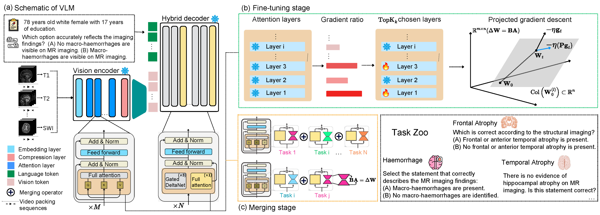
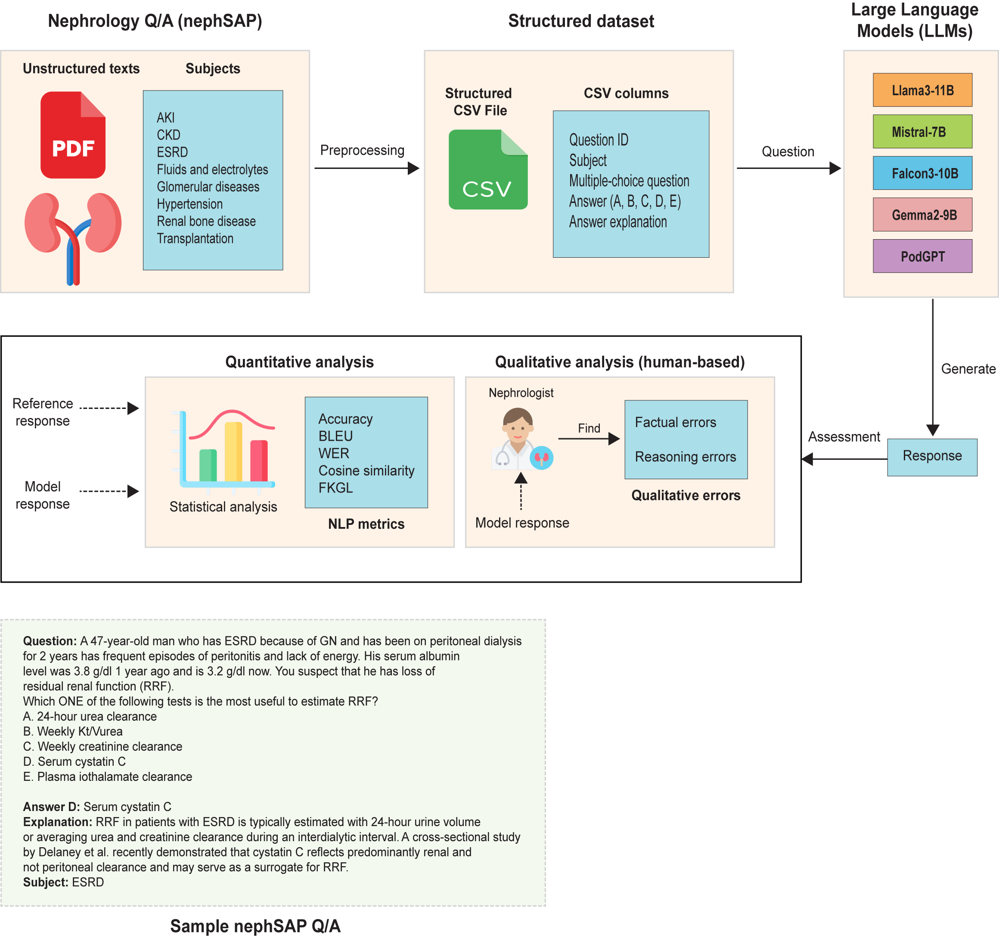
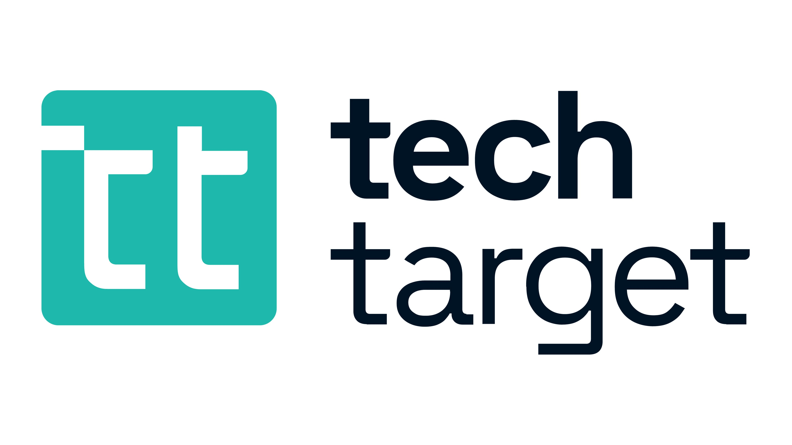
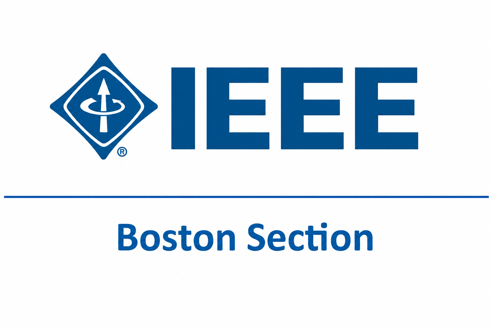

Boston University · Computer Engineering
Shuyue Jia 0 builds frontier AI for science, medicine, human-machine interaction, and robotics. His work moves from academic research 1, 2 into deployed systems 3 and open source 4 — and continues beyond the lab 5 through teaching, service, athletics, and photography 6.

Prior to BU, Shuyue received an M.Phil. in Computer Science (2023) from City University of Hong Kong, supervised by Prof. Shiqi Wang, and a B.Eng. in Intelligence Science and Technology (2020) from Northeast Electric Power University, supervised by Prof. Yimin Hou. His Ph.D. research builds trustworthy autonomous AI systems grounded in real-world evidence — spanning retrieval, attributional, modality/sequence, temporal, and physical/spatial grounding — with the long-term goal of Safe, Extensible, and Cost-efficient (SEC) AGI for science, medicine, human-machine interaction, and robotics.
Read the Research Statement.
-
FUNDING
Received $20,000 in Claude credits through the MIT–Anthropic AI for Science Study.
-
PRODUCT
ReMIND — video foundation model for multi-sequence brain MRI — is live.
-
PAPER
Medical Agentic RAG accepted by International Journal of Medical Informatics.
-
PAPER
DocAgent accepted by EMNLP 2025.
-
PAPER
PodGPT accepted by Nature npj Biomedical Innovations.
-
AWARD
2025 IEEE Boston Section Arthur Winston Student Award.
-
PRODUCT
PodGPT platform opened to the public.

ReMIND: Vision-language framework for multi-sequence brain MRI

PodGPT: Audio-augmented LLM for research and education

Agentic memory-augmented retrieval & evidence grounding

DocAgent: Multi-agent long-context document understanding

MedSyn: Text-guided anatomy-aware 3D CT synthesis

GCNs-Net: Graph CNNs for EEG motor imagery
Topic 1 — Trustworthy multimodal foundation models
ReMIND: Vision-language framework for multi-sequence brain MRI
PodGPT: Audio-augmented LLM for research and education

MedPodGPT: Multilingual audio-augmented medical LLM
MedSyn: Text-guided anatomy-aware 3D CT synthesis

GRAM: Gradient-guided adapter merging for neuroimaging VQA

Performance of open-source LLMs on NephSAP
Topic 2 — Grounded autonomous AI systems
Topic 3 — Computer vision



Anatomy-aware GenAI shows promise in medical imaging
ReMIND: An AI Assistant for Neuroimaging Analysis
ReMIND
PodGPT: Smarter AI through science podcasts
PodGPT: AI model learns from science podcasts to better answer questions
AI that speaks human about health

IEEE Boston Section Reflector
I prioritize research transparency and reproducibility, and provide links to the code and data associated with my previous research projects whenever possible. Exceptions include proprietary clinical data from hospitals such as BMC, LHMC, MGB, and BSH, as well as restricted-access datasets from NACC and NEJM. In these cases, I share data processing and analysis code whenever permitted, enabling researchers with authorized data access to reproduce and build upon our work.
GitRanks profile
PodGPT
Medical Agentic RAG
EEG-DL
EEG motor imagery CNNs
NLNet-IQA
MedicalNER
Medical Concept Mapping
Sonar image segmentation
Sci-Hub paper download shell
PodGPT collection
Quantization collection
ner-pytorch-model
Agentic Medical RAG database
CC-BY STEMM podcast transcripts
CC-Podcasts
Multilingual Pretraining Dataset
Teaching assistant
-
2026
ENG ME 345: Automation and Manufacturing Methods, Boston University
-
2025
ENG EC 327: Introduction to Software Engineering, Boston University
-
2024
ENG EC 500: Medical Imaging with AI, Boston University
Service
-
2026
Chair, IEEE Boston Section Circuits and Systems Society, Boston, MA
-
2026
Program Committee Member, Association for Computational Linguistics (ACL) Industry Track, San Diego, CA
-
2026
Technical Committee Member, Embodied AI Systems, IEEE Systems, Man, and Cybernetics Society
-
2025
Track Chair, IEEE MIT Undergraduate Research Technology Conference (URTC), Cambridge, MA
-
2025
Speaker Program Chair, IEEE International Conference on AI and Data Analytics (ICAD), Boston, MA
-
2025
Scientific Program Committee Member, AMIA Clinical Informatics Conference, Anaheim, CA
Reviewing
- IEEE Transactions on Pattern Analysis and Machine Intelligence (T-PAMI)
- IEEE Transactions on Multimedia (T-MM)
- IEEE Transactions on Circuits and Systems for Video Technology (T-CSVT)
- IEEE Transactions on Neural Networks and Learning Systems (T-NNLS)
- IEEE Transactions on Medical Imaging (T-MI)
- IEEE Transactions on Systems, Man, and Cybernetics: Systems (T-SMC: Systems)
- IEEE Transactions on Industrial Informatics (T-II)
- IEEE Transactions on Biomedical Engineering (T-BME)
- IEEE Transactions on Human-Machine Systems (T-HMS)
- IEEE Transactions on Affective Computing (T-AFFC)
- IEEE Transactions on Cognitive and Developmental Systems (T-CDS)
- IEEE Transactions on Emerging Topics in Computational Intelligence (T-ETCI)
- IEEE Journal of Biomedical and Health Informatics (J-BHI)
- IEEE Journal of Selected Topics in Signal Processing (J-STSP)
- IEEE Open Journal of the Industrial Electronics Society (OJ-IES)
- IEEE Open Journal of the Computer Society (OJ-CS)
- IEEE MultiMedia (MM)
- IEEE Sensors Journal
- International Journal of Computer Vision (IJCV)
- Computer Vision and Image Understanding (CVIU)
- Journal of Medical Internet Research (JMIR)
- IET Image Processing
- IET Science, Measurement & Technology
- Neural Information Processing Systems (NeurIPS)
- Association for Computational Linguistics (ACL) Industry Track
- International Conference on Learning Representations (ICLR)
- IEEE International Conference on Acoustics, Speech, and Signal Processing (ICASSP)
-
2025
IEEE Boston Section Arthur Winston Student Award
-
2025
Boston Marathon · Abbott World Marathon Majors
-
2023
Standard Chartered Hong Kong Marathon
-
2021
CityU Top 5 Runner, City University of Hong Kong
-
2018
Mathematical Contest In Modeling, Jilin, China · First Prize
-
2017
Outstanding Athlete, Northeast Electric Power University
-
2015
Chinese Physics Olympiad (CPhO), China · Third Prize
-
2015
National High School Math League, China · Second Prize

Kolachalama Laboratory